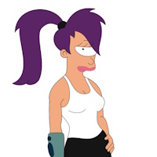

¿Dónde trabajan los personajes principales de Futurama? Interstellar Delivery Planet Express Space Shipments Galaxy Couriers ¿Cuál es el nombre completo de Bender? Bender Flexo Rodríguez Bender Bot Rodríguez Bender el tremendo Bender Bending Rodríguez ¿Cómo se llama el perro de Fry? Sparky Max Seymour Mordelón ¿Cómo se llama el planeta natal de Leela?  Vergon 6 Marte Tierra Amazonia ¿Qué usa Bender como fuente principal de energía? Alcohol Aceite para robots Energía solar Electricidad ¿Cómo se llama el esposo de Amy Wong? Zapp Brannigan Bender Fry Kif Kroker ¿Cuál es la frase de presentación de este personaje? "¡Silencio, terrícolas!" "¡Yo soy Lrrr, gobernante de Omicron Persei 8!" "¡Prepárense para la aniquilación!" "¡Inclínense ante Lrrr!" ¿Qué instrumento musical toca Fry? Flauta Violín Holofonor Guitarra ¿Qué es "Slurm" en el universo de Futurama? Una bebida gaseosa Un planeta Una especie alienígena Una droga ¿Quién es Cubert Farnsworth? El sobrino de Fry Un clon del Profesor Farnsworth El hijo de Hubert Farnsworth Hermano de Fry ¿Cuál es el nombre del robot actor más famoso de la serie? Calculón Flexo Bender Roberto ¿Cómo se llaman los hijos de Mamá? Larry, Zapp y Igner Walt, Larry y Hermes Walt, Larry y Igner Walt, John y Igner ¿Qué hace Fry con su reembolso de impuestos de $300? Compra una lata de anchoas Compra una colección de cómics antiguos Compra un robot de compañía Compra 100 tazas de café ¿Cómo se llama este grupo? Los Spaceballers Los Mutantes Los Intergalácticos Los Globetrotters ¿Cómo se llama el último capítulo de la temporada 7? Mientras tanto Hasta abajo Las manos del diablo son juguetes ociosos Sobreaceleramiento